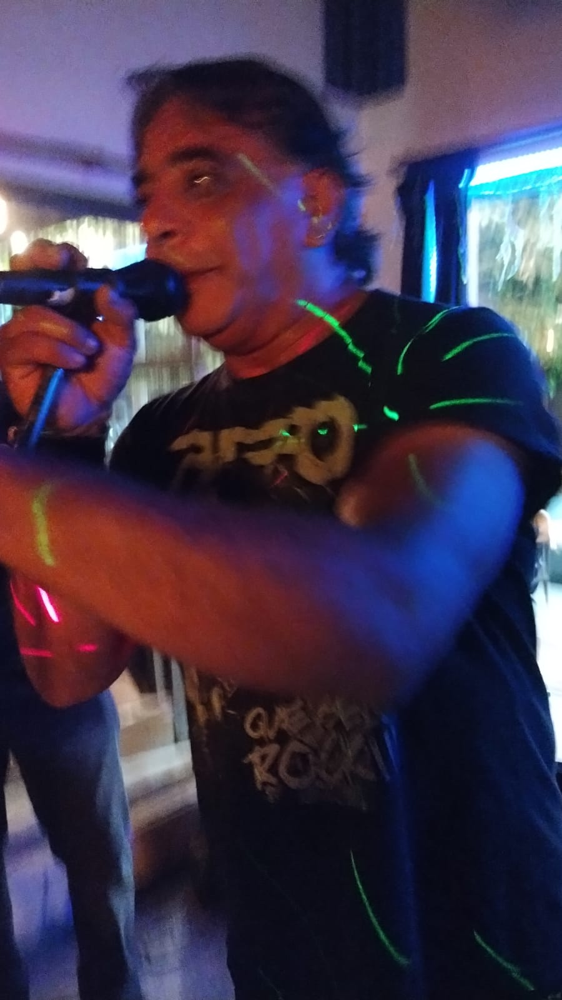
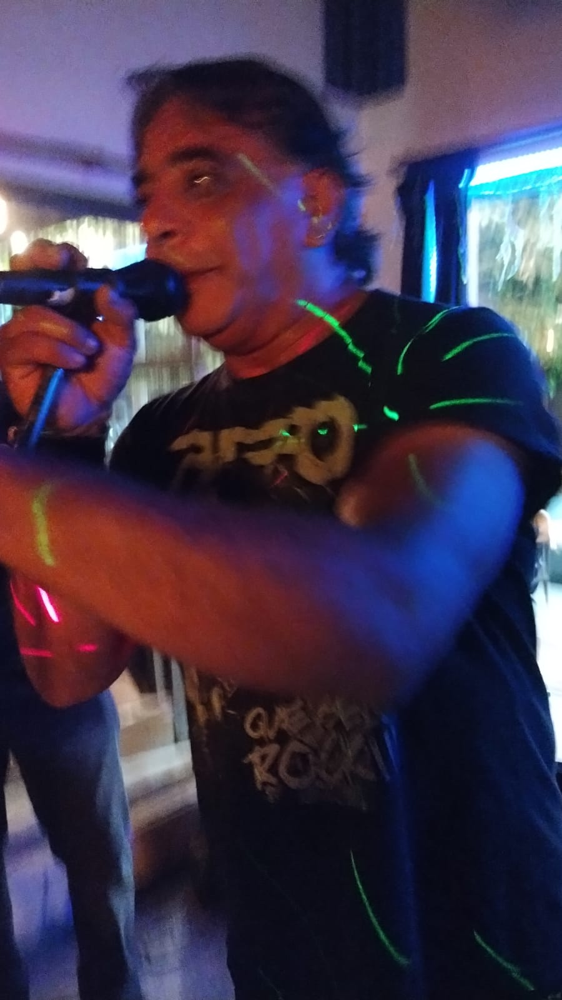

Dr. Malestar es una banda tributo que brinda homenaje a la obra completa de Norberto Anibal “PAPPO” Napolitano .
Los comienzos de la agrupación se originan en el año 2013, en el barrio Texalar de Morón, zona oeste del Gran Buenos Aires.
Su primer show tuvo lugar el 2 de agosto de 2013 en “Bendito Bar” en la ciudad de Ituzaingó.
A lo largo de los años quedan memorables presentaciones, en lugares emblemáticos como en la Plaza Dr. Roque Sáenz Peña “Plaza de Pappo”, en compañía de grandes bandas como “Viticus” y “La Renga”.
Esta agrupación cuenta con el privilegio de haber participado en el Primer Tributo a “Pappo” en el Parque Avellaneda.
En diversos Shows se ha compartido escenario con reconocidas bandas y artistas como “Horcas”, “Tren Loco”, “Serpentor”, Alejandro Medina y Víctor “Vitico” Bereciartúa.
La banda ha experimentado varias formaciones a lo largo de estos 12 años.
Actualmente Dr. Malestar está conformada por:
Gustavo "Negro" González
(Voz y armónica)
Hugo "Mosca" Fleitas
(Batería)
Jorge "Moncho" Carrizo
(Guitarra y coros)
Julio "Tano" Macaroni
(Guitarra y coros)
Héctor Bass
(Bajo)


 
